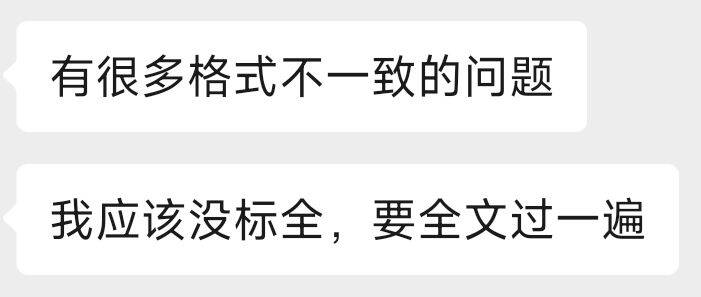

第九届全国密码技术竞赛参赛游记
确切而言，这并不能算得上是游记，因为是个线上作品赛，然后没晋级
不过收获的东西也不少，值得记录一下
比赛刚开始报名，我还是个什么都不懂的小白（虽然现在也是）
然后师兄师姐们在那边弄比赛，问我要不要一起报名，这种好事当然要报名（
然后就有了这篇游记（也算是游记吧
这次比赛我负责的是文档部分，当然代码也需要看懂
师兄写的代码很直观很可读，很容易就读完了，然后开始写文档
这算是我第一次写这种文档，还在积累经验中
后续逐渐完善，然后交上了，然后······就没有然后了~
通过比赛我学到的东西：
- 关于密码学，什么是有贡献的，什么是无效的
无效的是指，简单的缝合怪，把已有成果结合在一起，但是对学术界帮助不大
有贡献的是指，切切实实有创新点，例如给某个密码学算法新增了某个功能，或者提高安全性这样子
这次比赛，我们写的东西（不方便透露）应当算是比较无共享的，单纯将一些东西缝合在一起（当然也有可能是我写文档写得不好导致的）
虽然有代码实现，但是并未将这个作为亮点来展示，没有坚持一开始的方案（也是因为遇到的困难过多了）
- 写文件的要细心

感谢导师给改的文章，我看完导师标的内容，感觉要替导师吐血了——怎么这么多格式有问题的
文件保存好了，以后写文章要再翻阅
- 赛后看了隔壁组师兄的作品，发现了差距
无论是作品含金量和页面颜值，我们都是被碾压的
然后又看了看师兄做的PPT，很多图片，很好看
我意识到，读研的话做PPT做的好看十分重要；所以需要多收集一些做的好看的PPT进行阅读和模仿
- 然后就是学期计划，该推进度了（悲
二八定律：百分之70的学期过去了，只完成了30%的task
无论如何，加油加油
密码学竞赛作品制作有感24-10-17
最近和两个师兄在准备密码学竞赛，我们的作品是online-offline 数字签名，用sm2和sm3去实现
最一开始我重构了一下变色龙哈希文件的内容，去掉了没有用的代码，顺便改了一下库函数（因为有一个库，pip无法直接安装）
之后文档大致完成之后，因为是在线离线签名，可以应用在轻量级设备上，所以我想移植到单片机上，但是stm32仅支持c/cpp，然后买了个pico，但是开发经验太少导致不会玩，于是转回stm32，最终耗时二十小时左右，最终被玄学问题卡住了
之后计划使用centos-mini运行代码测试效率，开始搭建环境······
然后看了一下师兄画的图，和导师交流了一下，得知以上我做的对比赛而言并不是很重要，重要的是在图表中展示出效率之高
然后微调了一下代码···
1 | 改之前: |
效率飙升！
画出来的图表也十分可观
后来总结了一下，写文章重要的是怎么让专家看着觉得做出东西了，尤其是画图，一定要展现出轻量级（具体值少于1s就可以了），所以数据选择很重要；还有就是注意细节，每个点都要多校验一遍
.gif)
.gif)
.gif)
.gif)
.gif)
.gif)
.gif)
.gif)
.gif)
.gif)